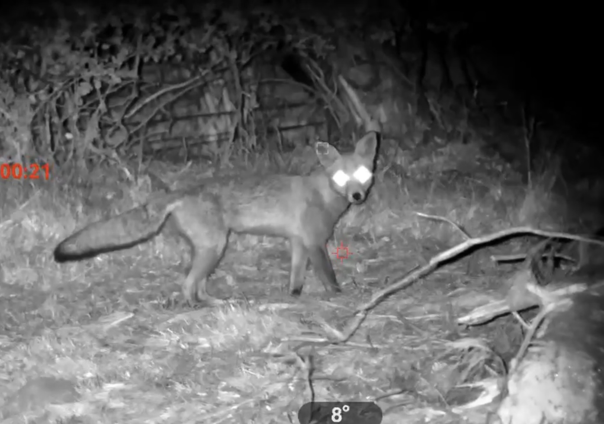
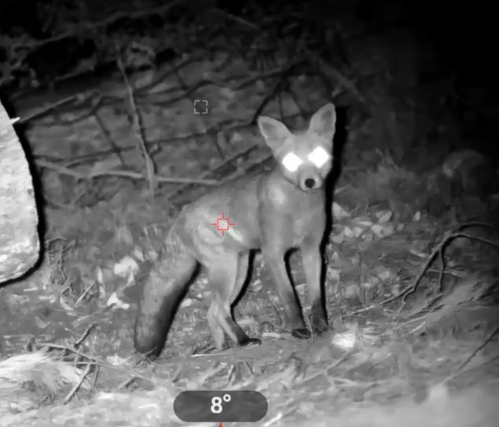

Understanding pest animals
European Red Foxes
A Major Introduced Predator

The European red fox was deliberately introduced to Australia during the nineteenth century.
Since then it has spread across much of the mainland and become one of the country's most significant introduced predators.
Impacts on native wildlife
Foxes prey on a wide range of animals including:
- small mammals
- reptiles
- ground-nesting birds
- young waterbirds
- invertebrates
- vulnerable juvenile wildlife.
Australia's native fauna evolved in the absence of foxes, leaving many species poorly adapted to this form of predation.
Fox predation can therefore place substantial pressure on wildlife populations, particularly where habitat has already been fragmented or degraded.
Agricultural impacts
Foxes may prey on lambs, poultry, domestic birds and other small livestock.
Foxes can also kill more animals than they consume in a single attack, creating significant animal welfare impacts and economic losses.
Why targeted fox control matters
Fox control can form an important part of broader conservation programs, particularly where vulnerable native wildlife is being protected.
Control is often most effective when coordinated across neighbouring properties or incorporated into wider landscape-scale management.
Need help with european red foxes?
FEMS can discuss the species, site and impacts you are experiencing and determine whether targeted control is appropriate.
Make an Enquiry
Field Operations
Working when foxes are active
Specialist night equipment can assist with locating and observing foxes when they are most active, supporting targeted and site-specific control while helping minimise disturbance to the broader environment.